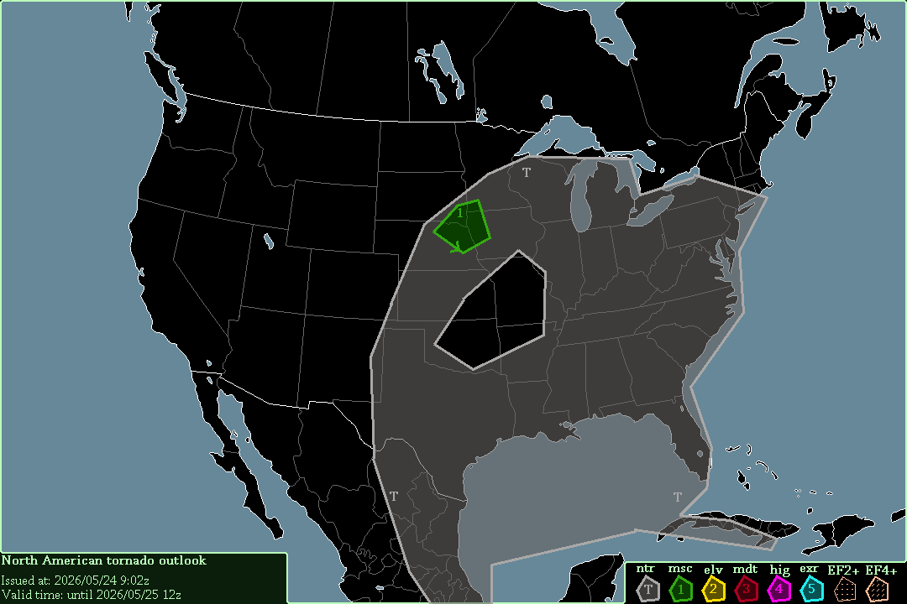

Today's tornado outlook

Thunderstorms are expected across the United States, as well as Mexico, southern Canada, & Cuba, starting now.
Sıxlônys outlook bor jjais
ILLIAÐЭNAZDURMAS (T) #1: N Kalifornıa, Oorehon, STRL Montaho, N + STRL Landuxis Rokı, Z + STRL Majjaris, Æ + ZÆ Meakšıko, N + Æ Gylfo bor Meakšıko, U Florıda, Dıksıı, Z Miduэst, Oohaaio Vallia, Z Mid-Atalantıka, Zeet-Atalantıka.
Un ooso lanis es jjэstıı эn Tэksas foor ıllıaðэnazdurmas bor myanunjjais, offašin a nyya.
Illıaðэnazdurmas эse эpexâdo эnasče Stajjosis Unionaatot, soeavemales эl Landuxis Rokı & , offašin a nyya.
Thunderstorms in Texas from yesterday (05/26) will continue to bring a small tornado threat to Texas. While CAPE is quite high, reaching 2000-3000 J/kg, SRH is low, reaching only 150-200 m²/s² in southeastern Texas.
-- Cenn Devel, 2026/05/27 6:44h UTC.